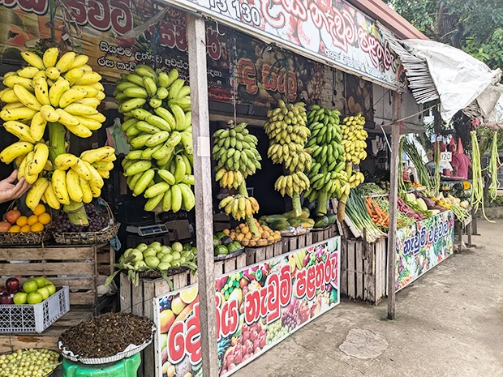
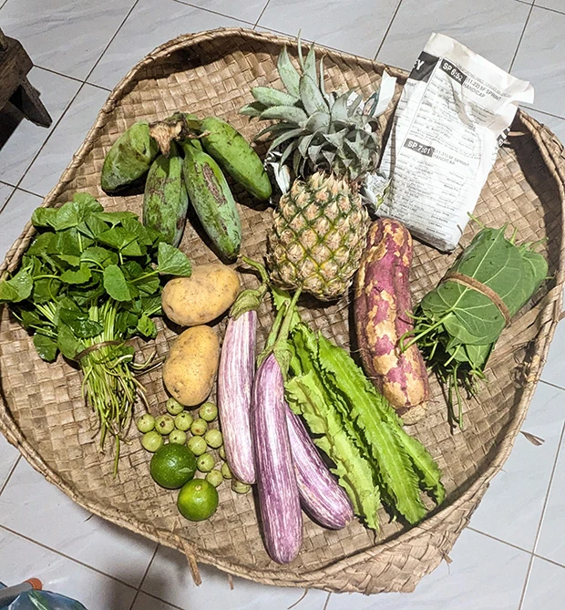
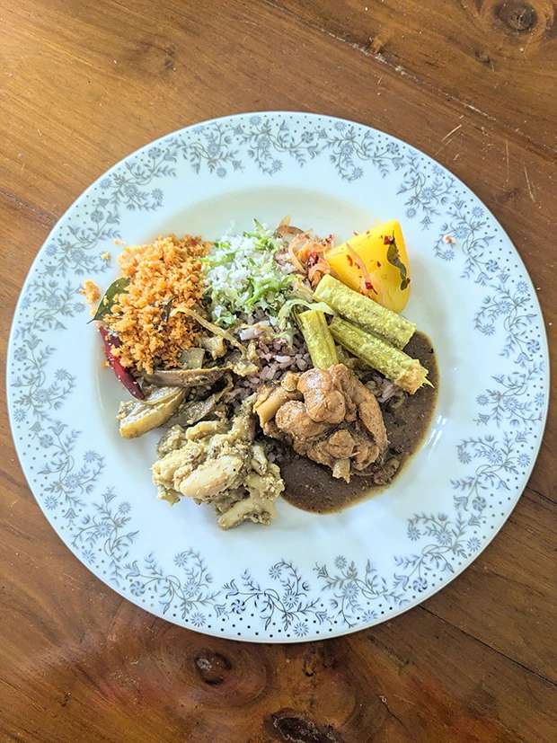

「日本人を宿泊させることができる環境のご家庭を紹介していただけるので、この留学プログラムに決めました。
最初から最後まで、逢坂さんやマーネルさんが丁寧にきめ細やかな対応してくださったので、安心して向かうことができました。
英語レッスンは、楽しく学習することができました。
学習方法もこちらのリクエストに柔軟に対応してくださり助かりました。
ホームステイを始めて、最初は虫の多い環境に驚きましたが、2日でなれました。
ホストファミリーとの生活はとても素晴らしい体験となり、マーネルさんご家族と出会えて本当に良かったです。
低開発村視察では、スパイスや文化を知ることができ勉強になりました。
街に行くと洋服がとても汚れるので、おしゃれな洋服は持っていかないほうが良いとおもいました。笑


スリランカは、想像通りに素敵な国でした。
食事がとても美味しくて、早くまた食べたいです。
またスリランカへ旅行を予定しております、また利用させていただきたいと考えております。
この度は色々とありがとうございました。
大変お世話になりました。
とても貴重な体験をさせていただきました。
またの旅行を計画しておりますので、その際はよろしくお願いいたします。」